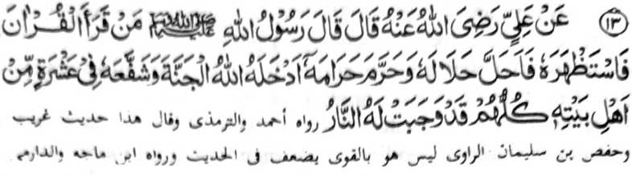
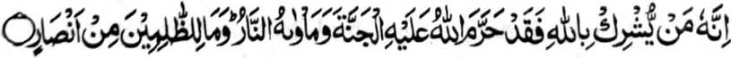
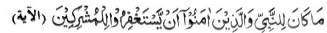

Hadith -13

Miyakathitayan ko Hadrat ‘Ali (Radhiallaho ‘Anho) a pitharo iyan a pitharo o Rasulollah (Sallallaho ‘Alaihi Wasallam), “Sa too a batiya-an niyan so Qur'an taros a milangag iyan, go pakahalalen niyan so piyakahalal o Qur’an, go pakaharamen niyan so piyakaharam o Qur’an, na pakasoleden sekaniyan o Allah ko Sorga go phakasapa-at sa sapolo ko manga ta-alok rekaniyan a siran noto na sabenar a miyapatot kiran so Naraka. ”
Sabap ko limo o Allah, na so kapakasoled ko Sorga na matatangked a bagi-an o omani miyaratiyaya makim pen mata-alik ko oriyan o kisiksa-an non ko manga dosa niyan. Ogaid, na so Hafiz na phakasoled sekaniyan ko Sorga si-i pen ko paganay. So sapolo a manga tao a khasapa-at iyan na giyoto so manga baradosa a manga Muslim, a miyakasogok siran sa manga ala a dosa. Da-a sapa-at a bagi-an o manga Kafir. So Allah na miyatharo Iyan:

'...Mata-an naya a saden sa mba-al sa sakoto o Allah na sabenar a hiyaramon o Allah so Sorga go darepa iyan so Naraka. Na da-a bagi-an o manga darowaka a phamakatabang." [Surah Al-Maidah:72]

"Da mapatot ko Nabi ago so siran a Miyamaratiyaya i ba iran phangenin sa ma-ap so manga pananakoto ma piya pen-i katotonganay ran non..." [Surah At-Taubah:113]
Giyangakanan a manga Ayaat sa Qur’an na rininayag iran a so manga Mushrikin [pananakoto] na diden perila-an. So sapa-at o manga Huffaz na si-i bo ko manga Muslim a aya kiyatago iran ko Naraka na sabap ko manga dosa iran.
So kena ba manga Huffaz, ago di ran khilangag so Qur’an na aya minos na senggay sekaniyan sa isa ko manga sisipeg iyan sa makalangag sa Qur’an ka oba kalo-kalo na sabap ko Gagao Niyan na malinding sekaniyan ko manga dosa niyan.
Patot so kapephanalamati ko Allah sabap ko limo Iyan sangkoto a tao a so ama iyan, so manga bapa iyan ago so manga ama iyan a dato ko mbala a lokes iyan na palayaden Huffaz. [Giya-i na miyaparoli angka-iya lokes tano a mizorat sangka-iya kitab. Ikalimo sekaniyan o Allah sa lebi a madakel]